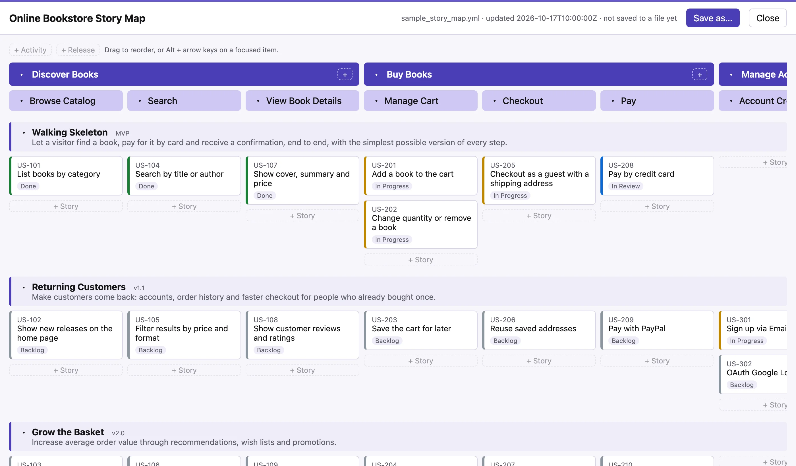

Keep the story map next to the code
Your AI agents read and update a plain YAML file. Your team sees and shapes it as a story map. Both stay in sync.

Agents write specs faster than people can read them
Spec-Driven Development (SDD) brings product owners into the AI workflow: specifications drive the agents, not only the code. It also brings back an old risk.
Walls of text
Long specification documents that nobody really reads, or understands.
No overall picture
Each spec is fine on its own, but nobody can see the whole user journey, or what is missing from it.
Priorities drift
What ships first gets decided one prompt at a time, instead of by the team, in the open.
One file, two views
A story map lays out the user's journey as activities and tasks, and slices it into releases that each have a goal. You see the whole journey on one screen, spot the gaps, and cut an MVP across the whole journey rather than one feature at a time.
Here, the map is a YAML file in your repository. Agents read and change it like any other file, and people work on the picture. The text stays the single source of truth.
- An open format: a JSON Schema and a sample map.
- Edit, fold and reorder releases, activities, tasks and stories, by drag and drop or from the keyboard.
releases: - id: "MVP" title: "Walking Skeleton" goal: "Let a visitor find a book, pay for it by card and receive a confirmation, end to end." activities: - id: act_1 title: "Discover Books" tasks: - id: task_2 title: "Search" stories: - id: US-104 title: "Search by title or author" release: "MVP" status: "In Review" # set by the agent
How it works
People decide the direction. Agents do the work and report on it in the same file. You review every change, as you review code.
Shape the map
Lay out the journey, slice the releases, write their goals, ideally in a workshop.
Read it, then specify and build
It picks up the next release's stories and writes their specs, then the code.
Report progress in the file
It moves stories to In Progress and In Review. The open map updates on its own.
Review the diff
The map changes in the pull request, line by line, like code. Nothing moves without being seen.
Tell your agent about the map
Put a few lines in your agent instructions (AGENTS.md,
CLAUDE.md or similar) so it knows how to use the map,
and what it must leave to people. Adapt the file names and rules
to your team.
## Story map The product's story map is `story_map.yml` (format: story-map.schema.json). - Read it before planning: releases are in delivery order, and each has a goal. - Work on the stories of the first release that is not done. Name each spec after its story id, e.g. `specs/US-104.md`. - Set a story to "In Progress" when you start it, and to "In Review" when its pull request is ready. Only people set "Done". - Do not add, remove, reorder or move stories between releases: propose such changes instead. - Change only the lines you need, and keep the comments.
Safe for agents and people to edit
In Chrome and Edge, the editor works on the file itself, both ways.
Changes elsewhere show up
When an agent, another editor or a git pull changes
the file, the map updates within a second, with no reload.
Edits go straight into the file
Comments, quoting and key order are kept: only the edited lines and the timestamp change, so diffs stay small.
No silent overwrite
If the file changed on disk since the editor read it, the save is refused and the map reloads.
Checked, and private
A JSON Schema catches broken files, and the editor flags duplicate ids. Nothing is uploaded.
Firefox and Safari open a copy instead: download your edits, and open the file again to see changes made elsewhere.
Where it fits
The map is the overview, not the spec. It adds a layer above the spec files you already have, whether you write them by hand or with an SDD toolkit, and it doesn't replace them.
Why, and in what order
The journey, the releases and their goals, and how far each story has got. One page.
What exactly
Details, acceptance criteria and technical plans, in your own spec files, linked to the map by story id.
How
Written and reviewed as usual.
Not a silver bullet
A clear, shared map helps, but only if the team talks about it. Here is what to expect, and what not to.
What it does
- Keeps the map where agents and code already are: the repository.
- Gives people a picture instead of a wall of YAML.
- Shows each release's progress, as agents report it.
- Makes every change to the plan visible in a diff.
What it won't do
- Replace the workshop: the map comes from a conversation, the file only keeps it.
- Real-time collaboration: one person edits at a time, and git merges the rest.
- Hold details: a story has an id, a title, a release and a status. No personas, estimates or acceptance criteria.
- Replace your tracker: statuses show progress, but sprints and assignments stay where they are. No Jira sync.
- Judge for you: an agent that edits the map can change your priorities, so review its changes.
Try it on the sample
Open the editor and choose Start from the sample, or open your own story map file.